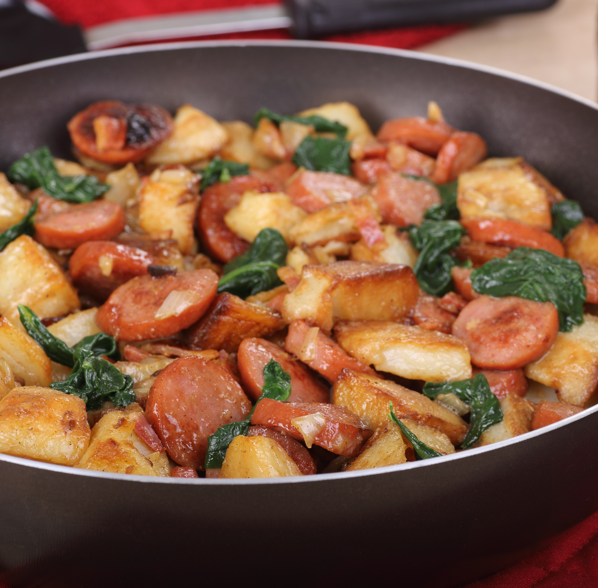

Kielbasa and Red Potatoes

Description
This is a personal favorite of mine that I came up with myself! This is a simple one pot dish that is easy to create in just a few minutes!
Ingredients
- 1 polish kielbasa
- 4-5 medium sized red potatoes
- 1 vidalia onion, minced
- 2 cloves garlic, minced
- 1 bunch of spinach
- 2 tsp salt
- 1 tsp black pepper
- 1 Tbsp italian seasoning
- 1 tsp crushed red pepper
Steps
- Slice kielbasa into 1-inch pieces (slice diagonally for more even cooking) and cut red potatoes into 1-inch cubes, leave the skin on or peel depending on personel preference.
- Boil a pot of salted water and cook potatoes for ~8 minutes, cooked but still slightly firm. Meanwhile, in a dutch oven, cook kielbasa, onion, and garlic over medium until well browned.
- Mix potatoes with kielbasa and cook 3-4 minutes, until potatoes begin to brown.
- Wash spinach and cut any stems off, add the bunch of spinach to the pot and cook until spinach is wilted.
- Add salt, pepper, italian seasoning, and crushed red pepper and cook for an additional 5 minutes.
- Let cool 5 minutes and serve.